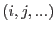
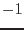

Fortran arrays are by default have integer indices, starting from 1. The starting index can be specified by users, however once it is passed to a subroutine, the information is in principle lost. And anyway they still have to be integer each spaced by 1, which is a strong constraint.
In practice a pair of indices in an array  are given a practice meaning. That information should ideally be held as an entity of the array - objected-oriented languages may provide some convenient way, but Fortran does not.
This Type variable is designed to hold those information, e.g., lower and upper (integer) bounds of the array, and the physical values corresponding to those `edges' of the array as follows.
type, public :: AryEdgesInfoT
integer :: aryDimension = -1
integer, allocatable :: arySize(:), lboundIndex(:)
real(double), allocatable :: lEdge(:), uEdge(:)
end type AryEdgesInfoT
Note the aryDimension gives the rank of the array. It is  when uninitialised.
If you want to get the upper bound of the array, use the function getUbound() (see Section 2.5.7).
To set an AryEdgesInfoT variable, the function getAryEdgesInfo() (see Section 2.8.2) offers a convenient way. You can of course set it by yourself, but if you do it, make sure all the component values in the variable are consistent with one another.